Notifications and Updates captured evidence
Unmodified browser captures of isolated fictional accounts on 8435c3d81734b1fc4bb8ac574368b331a9e99b9d. This gallery records the approved implementation; it is not a new design proposal. Open an image for its full capture.
See the authored reviews, final QA report and evidence history for acceptance and remaining conditions. Root text enlargement is not physical-device or assistive-technology certification. Capture hashes and provenance.
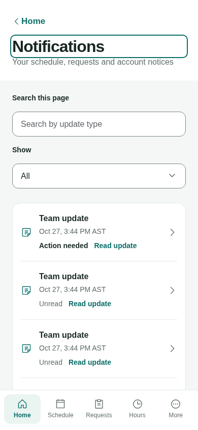
Notifications, light,390px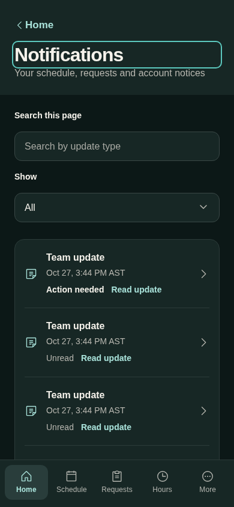
Notifications, dark,390px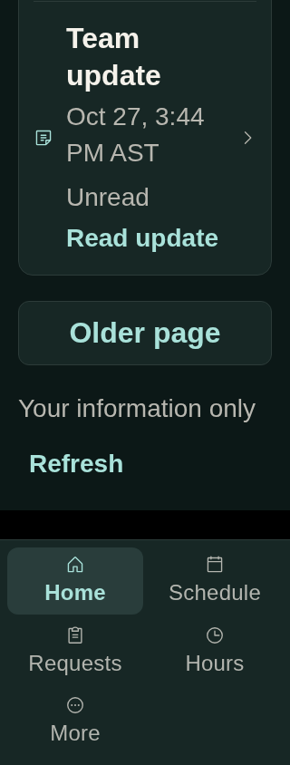
Notifications,200% root text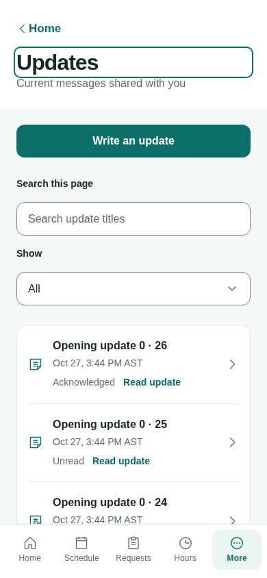
Updates, light,390px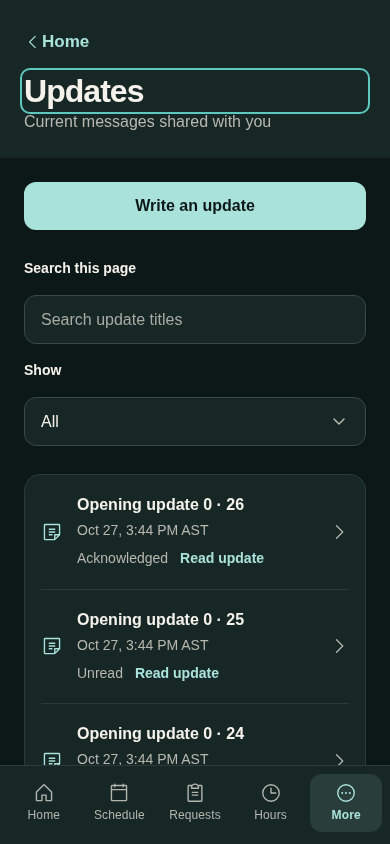
Updates, dark,390px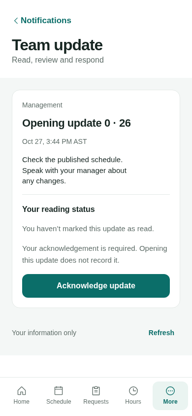
Own update, light,390px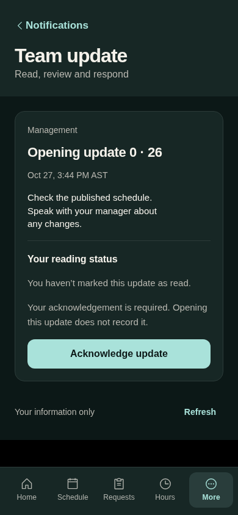
Own update, dark,390px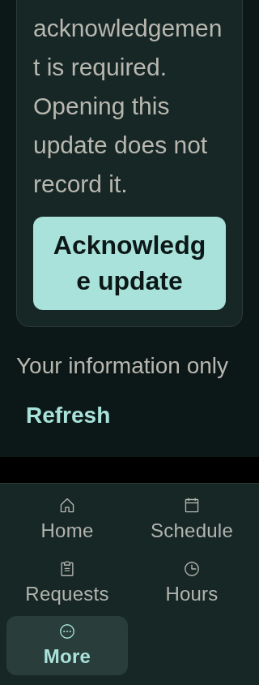
Own update,200% root text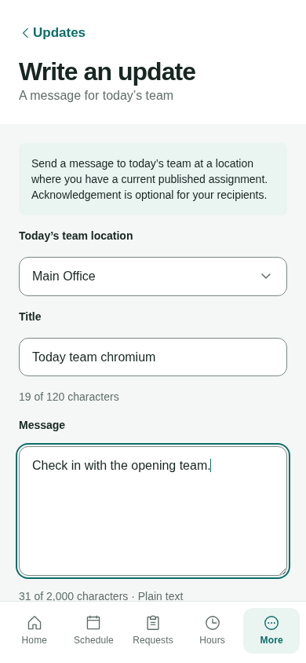
Today-team draft, light,390px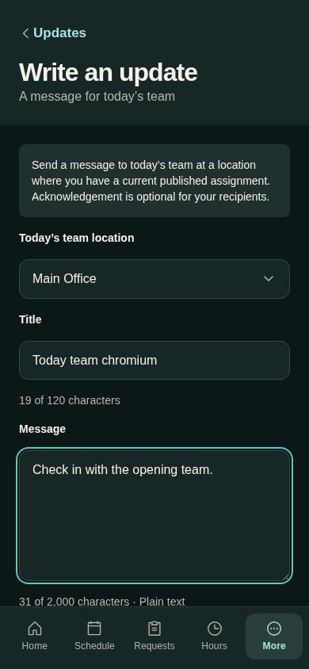
Today-team draft, dark,390px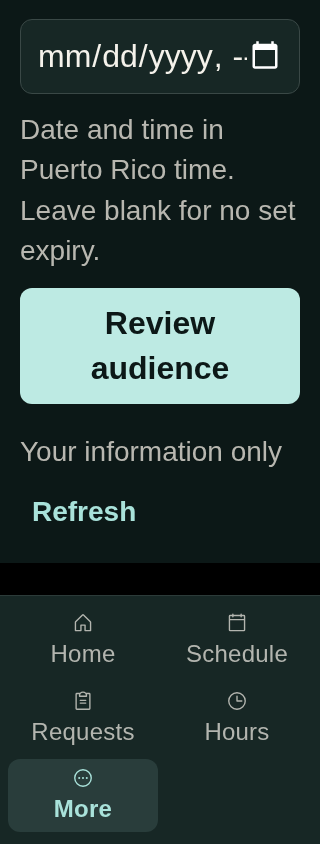
Today-team draft,200% root text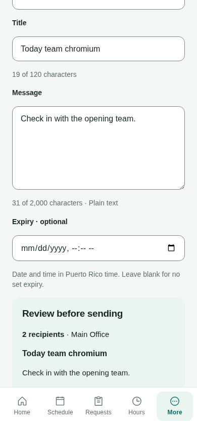
Actual current audience preview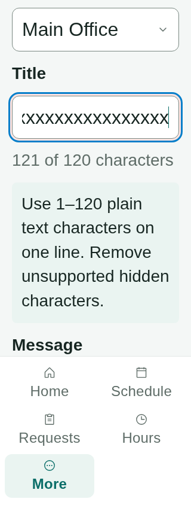
Field error and focus,320px/200% root text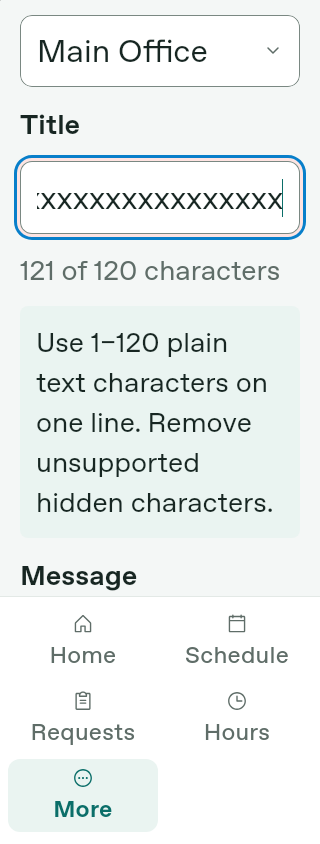
WebKit field error and focus,320px/200% root text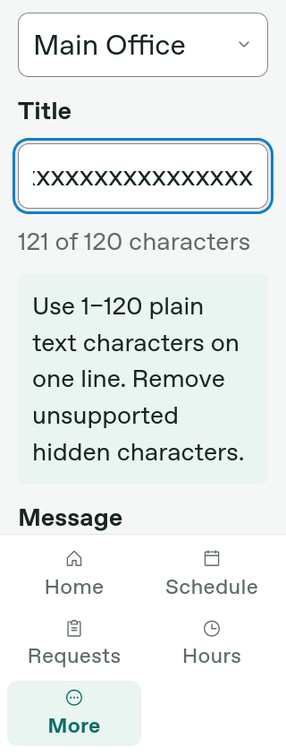
Firefox field error and focus,320px/200% root text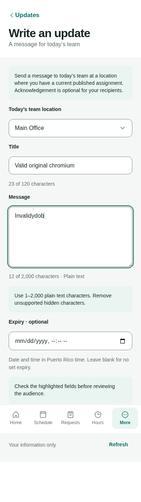
Canonical text-policy error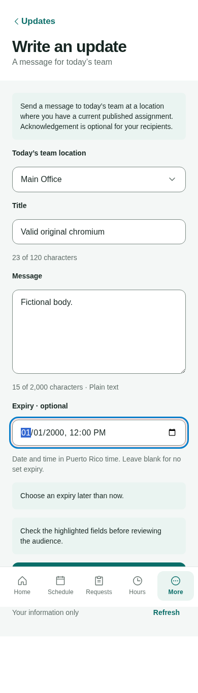
Expiry field error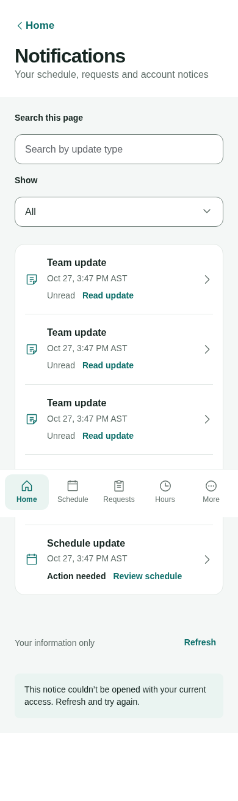
Hung open reaches bounded recovery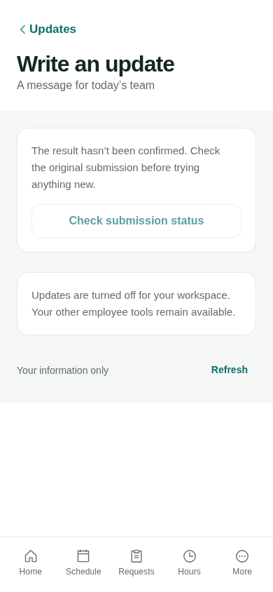
Actual403 original lookup while Updates off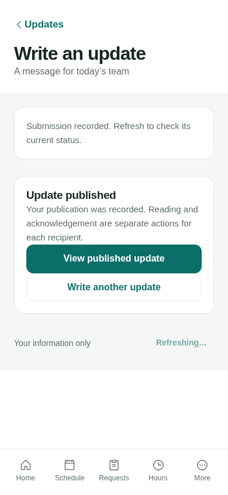
Original committed operation recovered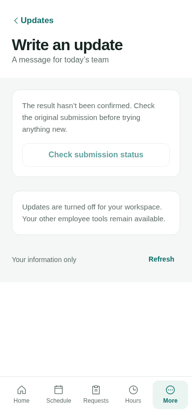
Immediate fence remains after pending reply release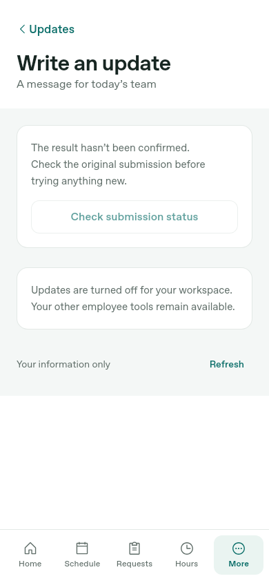
WebKit fence after pending reply release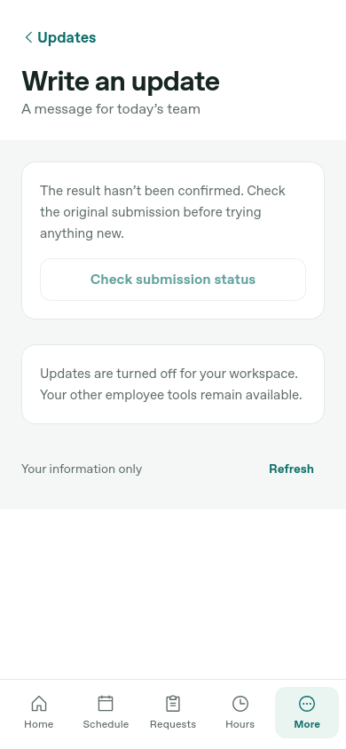
Firefox fence after pending reply release Actual committed late reply, Updates off
Actual committed late reply, Updates off